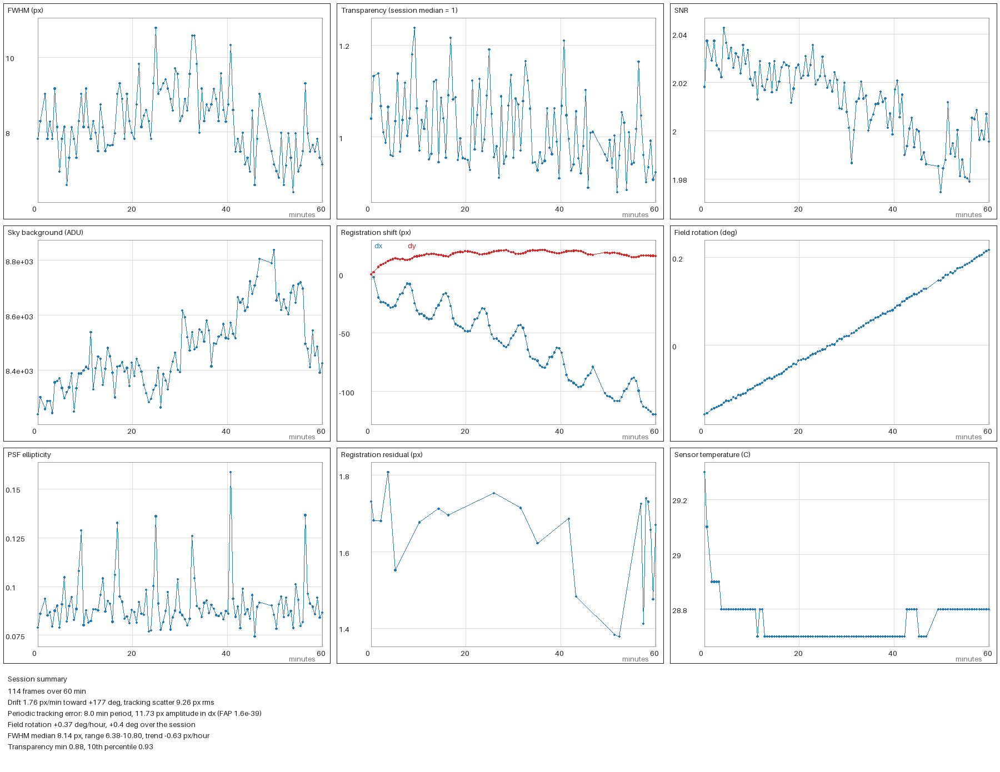
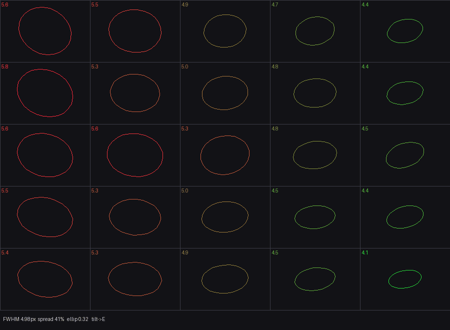
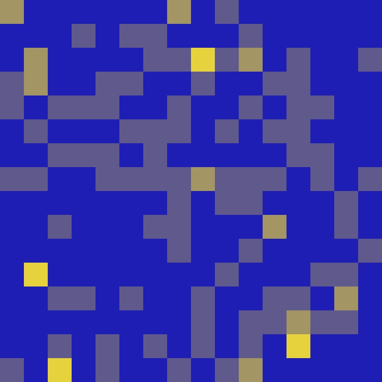

Field rotation and multiple nights
On an alt-az mount such as the Origin, the sky rotates in the frame as the target tracks across it. Two things follow: single nights need rotation-aware alignment, and combining nights is harder than adding numbers.
- Rotation-proof registration
on by default Frames are aligned by matching star patterns with a rotation-and-scale fit, not by shifting them. A frame whose simple shift comes out as nonsense because of rotation is rescued with a blind star-pattern match instead of being stacked in the wrong place.
On a real Fireworks Galaxy session, 34 of 148 frames were flagged this way; another session flagged 40 of 117. They used to be stacked at a coarse or zero shift.
- Merge nights into one stack
--merge PREV.fits Processes only tonight's frames, then registers each earlier stack onto the new grid with no assumption about the rotation angle, matches its brightness scale, and combines with inverse-noise weights inside each footprint. The result stays linear, so it can be merged again next time.
- Sessions stacked together or apart
folder of sessions Pooling every night into one stack keeps only the area every frame covers, and rotation shrinks that area. OriginStack reads each session's metadata first, works out the rotation that pooling would lose, and stacks the sessions separately when it is more than 3 degrees. They are then registered onto the deepest one and finished once.
Pooling five Lagoon Nebula sessions would have spanned 26.8 degrees of rotation and cost 42% of the frame.
- Mosaics
--mosaic Stacks each subfolder as a panel and joins the panels.
Stacking
- Nine ways to combine
--stack-method Mean, median, sigma-clip, winsorized, percentile, ESD, linear-fit clipping, inverse-variance weighted, and a wavelet-domain combine. The default,
auto, picks one for you. Rejection uses a robust spread estimate (MAD) by default.Linear-fit clipping is modelled on PixInsight's method; it copes better with non-Gaussian tails than a plain sigma clip.
- Optimal weighting and an error map
--stack-method ivw--uncertainty-map Weights each frame by the inverse of its own measured noise variance, the best linear combination for that noise model. With the error map on, it also writes the standard error of every pixel as a second FITS file.
- Drizzle
--drizzle-scale 2--drizzle-method splat Combines dithered frames onto a finer grid. The default resamples with a Lanczos-3, PSF-matched or Magic Kernel filter. The splat method is the original area-overlap drizzle: about six times faster, no ringing, and softer.
On a synthetic dithered scene, splat's error against the truth was 40 to 44 against 35 for resample. That is why it is opt-in.
- Super-resolution refinement
--super-res-iters Iterative back-projection after drizzle: it simulates each frame from the current estimate, compares it with what was recorded, and feeds the difference back.
- Lucky-imaging weights
patch-weighted combine Frames are scored region by region, so a frame that is sharp in one corner and soft in another counts for more where it is sharp.
- Real-time and low-memory stacking
--live--stream --livewatches your capture folder and folds each new frame into a running stack, showing the growing image and its signal-to-noise.--streamstacks a finished folder in two passes with memory that does not grow with frame count. It leaves out a few extras, such as drizzle and merging.
Frame quality
- Scoring and rejection
--quality-threshold Every frame is scored for signal-to-noise, star count, FWHM and sharpness. Hard limits and outlier tests drop the clearly bad ones, and the lowest-scoring fraction is dropped by percentile. Scores also drive the weights in the combine.
- Transparency gating
--transparency-min Measures each frame's relative brightness from a fixed set of stars, so frames dimmed by thin cloud can be dropped.
One real session ran from 0.86 to 1.23 against its median.
- Satellite and aircraft trails
--trail-reject Finds line segments in each frame and fills them from the surrounding background before stacking.
- Cosmic rays and hot pixels
on by default Hot pixels are handled per frame. With 20 or more frames and a rejecting combine, cosmic rays are removed per pixel by the combine itself, so the slower per-frame detector is skipped.
- Row and column banding
--banding-removal Removes faint horizontal or vertical stripes per colour plane after calibration, gated so it does nothing when the pattern is not significant.
Real Origin frames carry about 12 ADU of row banding, roughly 3% of the pixel noise.
- Clean out a whole collection
--quality-sweep Scores every light in a folder tree and renames the poor ones to
.fits.rejected, which stacking then ignores. A dry run reports first, and--sweep-undorestores every file.
Calibration
- Master frames that separate pattern from dust
--master-method robust_pca Splits a stack of flats, darks or bias frames into the pattern they all share and the parts that moved between them, such as dust motes that shifted between sessions. It is slower than a median and needs enough frames, so it is opt-in, though the auto advisor upgrades to it when the frame count suits.
- Flats from your lights
--flat-from-lights When you have no flats, approximates one from a sample of light frames using the same decomposition, since dithering moves stars but not vignetting. Approximate, and opt-in.
- Darks matched by temperature
--dark-temp-model Fits dark current against sensor temperature across a whole dark library and evaluates it at each light's temperature, so a small library can cover a wide range.
- Gain and read noise from your own frames
automatic with photometry Estimates the camera gain and read noise from a pair of bias frames and a pair of flats, for the noise terms in photometry.
- Session-constant colour-grid equalisation
on by default The tiny gain difference between a sensor's two green pixels and a faint 2-by-2 pattern left by demosaicing are properties of the sensor, so they are measured once from eight frames instead of on every frame. Debayering became about 2.8 times faster with the stack unchanged to 0.1 ADU.
--no-session-cfa-eqrestores the per-frame path.
Diagnostics that tell you why
These do not change the image. They explain it: how the mount behaved, where the optics are soft, whether your dithering was even, and how much of the noise you see is real.
- Session report
--session-report A nine-panel picture and a CSV of the night: drift rate and direction, field rotation rate, periodic tracking error, FWHM trend over time and against temperature, transparency, and background.
- Field aberration map
--aberration-report Measures star width and elongation across the field and diagnoses tilt and curvature.
- Dither coverage
--dither-report Shows whether your sub-pixel dither positions cover the pixel evenly, which is what limits drizzle quality and which nothing else measures.
- Noise you can check
--noise-validate Stacks the odd and even frames separately and compares them. The difference gives the true noise in the stack, and the agreement map shows which structure is repeatable and which is noise.
On a real session about 61% of the frame was repeatable, and the measured noise was 1.16 times the per-frame estimate divided by the square root of the frame count.
- Error bars on the finished image
--uncertainty-propagate The stack's error map describes the linear stack, but the finishing steps reshape the noise. This carries the uncertainty through them by drawing noise realisations and running each through the real processing chain, then reporting per-pixel confidence.
--error-aware-stretchuses it to keep sub-threshold noise out of the stretch.- Optics distortion fit
--distortion-model Fits a radial distortion to the whole session and applies it only if it beats the noise. On the Origin's optics it found nothing significant (see below).
- Health check
--health-check Reports on a session's frames and calibration without stacking.



Measurement, not just pictures
- Absolute photometry
--photometry Finds the stars, matches them to Gaia, measures each with a partial-pixel aperture and a robust sky annulus, and fits a per-channel zero point with extinction from your site and time. It writes a catalogue CSV and zero points into the FITS header.
Accuracy is about 0.05 magnitudes: the colour-camera channels are mapped coarsely onto Gaia's bands.
- Light curves
--photometry-timeseries Measures a fixed list of stars on every frame and calibrates each frame against an ensemble of steady comparison stars, so clouds and airmass cancel. Marks candidate variables and reports your target's scatter.
- Periods and transits
--lightcurve-analysis Runs a Lomb-Scargle period search and a box-least-squares search on those light curves, then fits a trapezoid transit and tests it against a flat line.
- Did anything change?
--transient-detect REF.fits Compares tonight with an earlier stack using proper image subtraction (ZOGY), which cancels the star residuals a plain subtraction leaves even when the seeing differs. Reports the significance of each candidate in real sigma, and masks the corners that field rotation left uncovered.
- Asteroids and other movers
--moving-objects Links faint detections across different frames into tracks and stacks along them. On a real session with no mover, 1,497 candidate detections produced no false tracks.
- Plate solving, colour calibration, annotation
--plate-solve--color-calibrate--annotate Solves the field on astrometry.net, calibrates colour against star spectra, and labels named objects and bright stars on a copy of the preview. These go online when you enable them;
--offlineturns them off.
Finishing the image
- Background and gradients
on by default Dynamic background extraction fits a smooth surface to sky samples with a robust local regression, admits patches that follow a gradient, and flattens glow that is cut off by the frame edge. In a galaxy or comet mode it protects the object.
- Noise reduction
--denoiser wavelet A wavelet denoiser that protects elongated structure such as filaments and spiral arms, with an optional variance-stabilising transform. Chosen after benchmarking the alternatives on ground-truth scenes.
- Deconvolution
--deconvolve rl|rl-sv|tv|sparse Richardson-Lucy (global or varying across the field), total variation, and a sparse wavelet method. The point-spread function is estimated from your own stars, and stars are protected from ringing.
- Starless processing
--remove-stars--starless-process Removes stars by inpainting, saves a starless copy, and can run the denoising on the starless layer alone with the stars added back exactly.
- Stretch
--stretch ghs--layered-stretch Generalised hyperbolic stretch, with the black and white points taken from the starless image so bright stars do not set them.
- Colour combinations
combine--scnrcombine --continuum LRGB and narrowband palettes (SHO, HOO), green-noise removal, magenta-star repair, and continuum subtraction with the subtraction scale fitted automatically.
- Exposure fusion
--hdr-combine SHORT.fits--hdr-blend-mode fusion Blends a short and a long exposure through a multi-resolution pyramid so there is no visible seam at the transition.
- Star repair and separation
--repair-stars--nmf-separate Refills clipped star cores from a fitted profile, or splits an image into star and nebula components with non-negative matrix factorisation.
Workflows and plumbing
- Target-aware defaults
on by default--no-auto--preset Classifies your target from the session file, FITS header and folder name, then blends settings smoothly across eight target presets, so something between an emission and a reflection nebula gets a mix instead of a hard jump. Anything you set yourself is left alone.
- Resume and reproduce
--configcheckpoints A run saves a checkpoint after Phase 1, and every run can write its effective settings to a config file to reapply later.
- Fast where it counts
astro_native Fifty-seven multi-threaded Rust kernels cover the hot loops, each with a NumPy fallback and a parity test against it. The build reports which is active at startup.
- Runs offline
--offline Makes no network request at all. Without it, a run may look up a target name it does not recognise on SIMBAD; only the name is sent.
- Every input, one folder
FITS RAW TIFF XISF SER Camera RAW, TIFF, XISF and SER planetary video load through one path and can be mixed in a folder.
What we tried that did not work
Most software lists what it can do. These were built, measured on real data, and found wanting. They are kept, off by default or self-disabling, so you can see why.
A physics-based sky background model
It fits airglow, moonlight, zodiacal light and light pollution by geometry. On a typical one-degree field those components are almost flat, so the fit has nothing to grip, and it made the corner-to-corner gradient worse (67 to 111 ADU) where the default removed 68%. It now measures its own result and declines when it does not help.
Bayer-aware drizzle
A simulation promised sharper stars. On a real well-sampled stack it cut luma noise by 13% but more than doubled the colour noise and gave no sharpness gain. It stays opt-in, for undersampled data only.
Three denoisers
Non-local means halved star peak brightness, block-matching (BM3D) was slow and licence-encumbered, and a multiscale-median method erased about 93% of fine structure. They were removed after a ground-truth benchmark.
A distortion correction for the Origin
The fit found a coefficient of +0.0007, not significant, so nothing is applied. The optics are effectively distortion-free; the machinery is tested on synthetic data.
Deconvolving the starless layer at low signal
On a stack of very noisy frames, the plain image beat both the starless Richardson-Lucy and the sparse method, which rang badly. It is implemented and correct, and not recommended below high signal-to-noise.
Faster medians by sampling
A strided or random subsample of the debayering statistics gave errors as large as the correction itself, because the data has structure with a four-pixel period and the per-frame noise is around 1,100 ADU. The fix was to measure once per session instead.